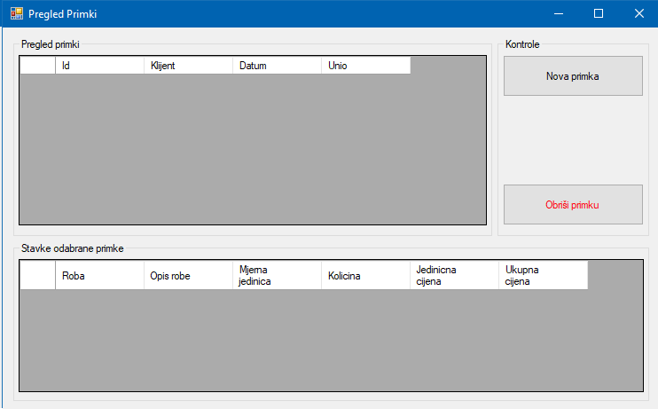

Prozor pregled primki prikazuje sve unesene primke u sustavu. Za svaku odabranu primku prikazuje sve stavke primke. Korisničke kontrole su "Nova primka" i "Obriši primku", klikom na tipku "Nova primka otvara se novi prozor za kreiranje nove primke i dodavanje stavaka na primku. Klikom na "Obriši primku" briše se trenutno odabrana primka i svi njezini zapisi.
